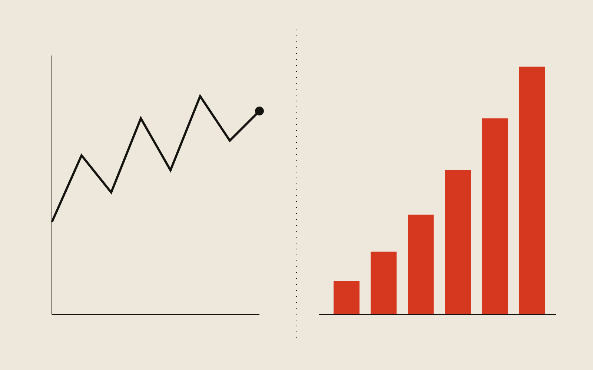
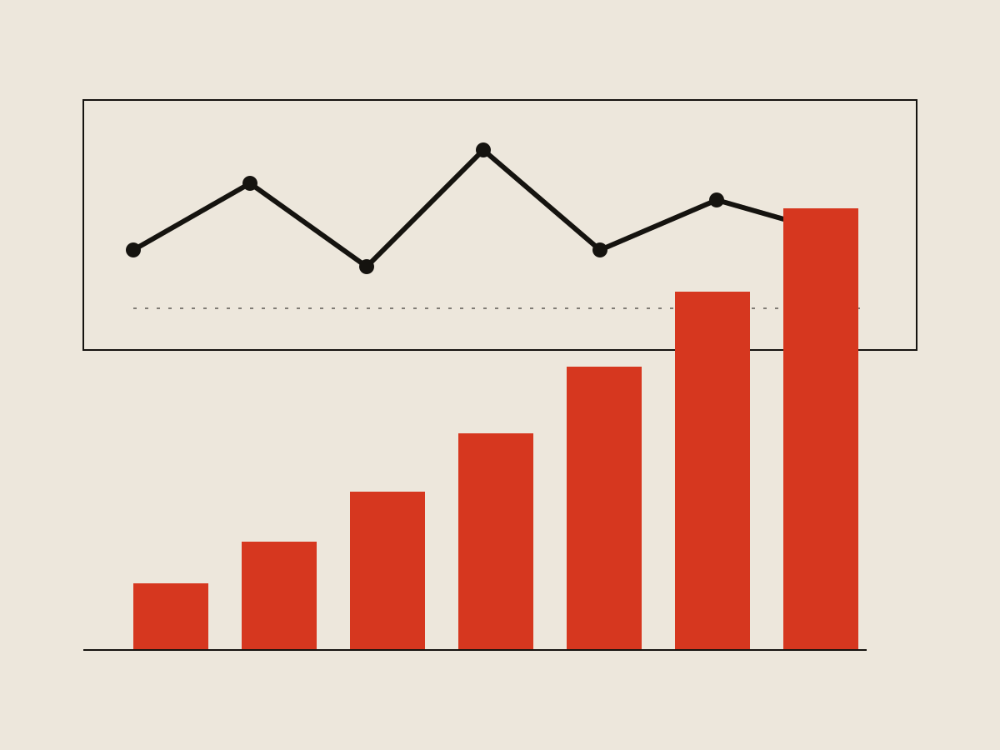
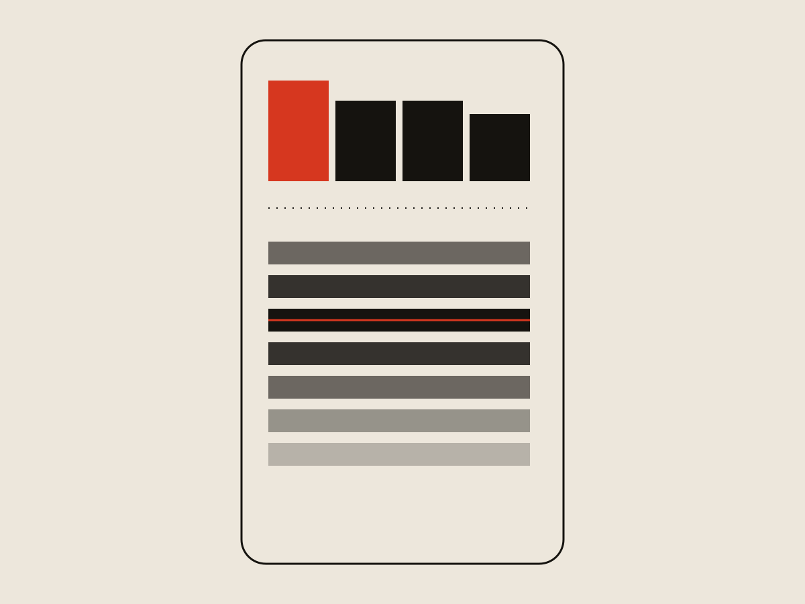

Team Nation Sports
Team Nation Scoring
Fixing a scoring system that punished players for playing.

Context
Team Nation teaches athletes their playbooks through mobile learning games: coaches upload the content, players drill it through games, and everyone's performance lands on a leaderboard. The core metric was Readiness — a percentage per skill area plus an Overall Readiness, calculated from how many questions a player got right and how quickly they answered.
Problem
The same shape kept showing up in weekly usage: games played per team climbed when a team first joined, then plateaued, then dropped off. When we asked coaches and players why, the answer was consistent — they felt punished for continuing to play. Readiness was an average, so a player who'd built up a high score could play another game, do fine, and still watch the number tick down. Once players caught on, the smart move was to stop playing the moment their score looked good. The leaderboard made it worse: with a 100% ceiling, the top players bunched into what looked like ten-way ties, which flattened any sense of competition.
The reasoning
The obvious fix is to change the formula so good performance can't drag your score down. I didn't do that, and why I didn't is the whole decision.
Readiness isn't supposed to only go up. It's a proxy for how well someone knows the material right now, and like any skill, that should slip when you stop practicing and climb when you keep at it. An average that can fall is doing exactly what a measure of current competency should do. So the math wasn't broken. What was broken was that Readiness was the only number players could see — the one metric built to move honestly in both directions was also the only thing we'd given them to chase.
So I left Readiness alone and added a second number beside it: points, earned every game, that only ever go up. Coaches kept the honest, current read on skill they relied on. Players got something that rewarded them for showing up without quietly lying about how ready they were.

Design
I rebuilt the mobile leaderboard around points instead of Readiness, giving the top four spots visual emphasis to sharpen the competition at the top of a team. The rest of the leaderboard shifted to center each player's performance relative to the pack instead of a flat ranked list. Coaches kept their own leaderboard and analytics view, still built on Readiness, since that was the number that actually mattered to them.

Outcome
After launch, games played by top-performing players went up 3x. Across the full player base, games played rose 1.5x. The drop-off we'd watched hit teams as they plateaued stopped following the same curve — the number that had been discouraging play was no longer the one in front of players.
What I'd do differently
I'd give coaches direct control over the incentive layer, not just visibility into it. Right now points reward playing games generically, but coaches know their content better than any formula does. Letting them weight specific content — make a critical play worth more than a drill they consider basic — award bonus points for strong in-game performance, or periodically reset scores to reopen the leaderboard for players who'd fallen behind, would turn points into a coaching tool rather than just a player-facing motivator. What we shipped fixed the "players stop playing" problem. It didn't yet give coaches a way to shape what players chase.
What it came down to
The pull was to fix the formula. That would have solved engagement and quietly wrecked the thing coaches relied on: an honest read on where their players actually stood. The real problem was that one number was being asked to do two jobs — measure skill and motivate play — and those jobs pull in opposite directions, so no single formula could serve both. Splitting them let each number be good at its own job.